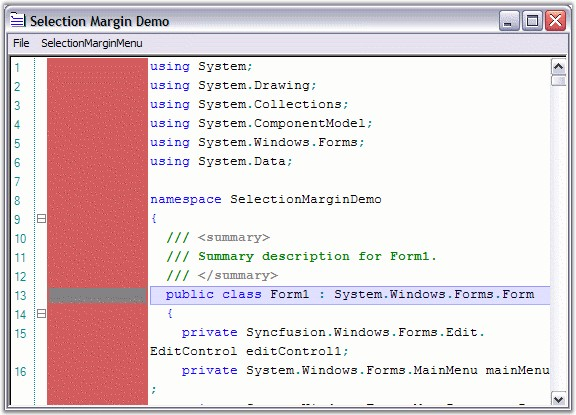
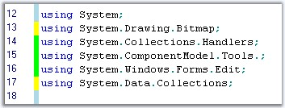

Selection Margin is a thin vertical strip along the left side of the Edit Control that enables you to select the contents of the entire line on the Edit Control, by simply clicking on the corresponding selection margin area of the line.
The ShowSelectionMargin property allows you to show / hide this selection margin. The following are the properties used to customize the margin.
|
Edit Control Property |
Description |
|
SelectionMarginForegroundColor |
Gets / sets foreground color of the selection margin. |
|
SelectionMarginBackgroundColor |
Gets / sets background color of the selection margin. |
|
SelectionMarginWidth |
Sets the width of the selection margin. |
|
[C#]
this.editControl1.SelectionMarginForegroundColor = Color.Gray; this.editControl1.SelectionMarginBackgroundColor = Color.IndianRed; this.editControl1.SelectionMarginWidth = 100; |
|
[VB.NET]
Me.editControl1.SelectionMarginForegroundColor = Color.Gray Me.editControl1.SelectionMarginBackgroundColor = Color.IndianRed Me.editControl1.SelectionMarginWidth = 100 |

Figure 65: Selection Margin Set
Differentiating the Lines based on Actions
Edit Control supports marking the changed lines and the saved lines with different colors.
Lines that are modified after the file load or after the last file save operations are the changed lines. They are marked in yellow color, by default. Once they are saved, they will be changed to green, by default.
The changed lines marking feature can be enabled by setting the MarkChangedLines property to True. For this property to be visible in the Edit Control, the SelectionMargin property should also be enabled.
|
[C#]
this.editControl1.MarkChangedLines = true; |
|
[VB.NET]
Me.editControl1.MarkChangedLines = True |

Figure 66: Saved Changes in Green and Unsaved Changes in Yellow
Refer to the Selection Margin Demo sample in the following sample installation location, for more information in this regard.
..\My Documents\Syncfusion\EssentialStudio\Version Number\Windows\Edit.Windows\Samples\2.0\Advanced Editor Functions\SelectionMarginDemo